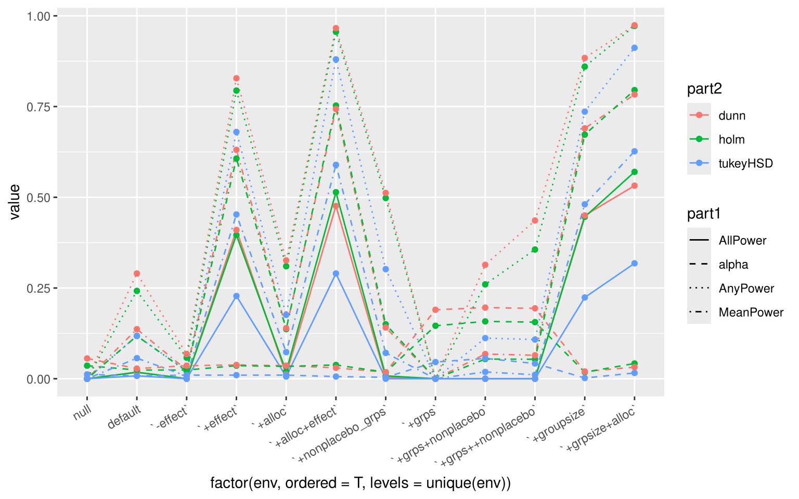

Contrasts against Control: Dunnet vs. Holm vs. TukeyHSD
Author
Lukas Graz
Published
May 4, 2023
TLDR: Even though Dunnet is proven to be optimal (in all vs comparison) for a reasonable group number (around 10) Holm seems to yield basically the same result, while being a more general method. Dunnet is more powerful, when increasing the group number (e.g., to 30).
Purpose and Structure of this Document
In many cases, we may want to compare new alternatives to a standard treatment or control. To do this, we use a linear model and perform hypothesis testing of all alternatives versus the control. The purpose of this document is to compare the power of different multiple testing techniques.
The document is structured as follows:
Define helper functions, including:
data generation
multiple testing functions
wrapper for simulations
Perform simulations for various settings.
Plot the results.
Note, that there are different definitions of “power” in this context. We will be using the following definitions:
The expectation that any of the non-placebos will be rejected.
The expectation of the fraction of non-placebos that will be rejected.
The expectation that all non-placebos will be rejected.
Help functions
set.seed(123)n_rep <-500library(multcomp)
Loading required package: mvtnorm
Loading required package: survival
Loading required package: TH.data
Loading required package: MASS
Attaching package: 'TH.data'
The following object is masked from 'package:MASS':
geyser
library(ggplot2)# g groups, of which one is the control, n_effect of which have the effect `effect`get_data <-function(g =10, n_t =5, n_c =5, effect =1, n_effect =3) { fac <-as.factor(rep(c("ctrl", c(LETTERS, letters)[1:(g -1)]), c(n_c, rep(n_t, g -1))) ) groups <-relevel(fac, ref ="ctrl") y <-rnorm(groups, c(rep(0, length(groups) - n_t * n_effect), rep(effect, n_t * n_effect)) )data.frame(group = groups, y = y)}holm <-function(data) { fit <-lm(y ~ group, data) p_vals <-summary(fit)$coefficients[-1, "Pr(>|t|)"]p.adjust(p_vals)}none <-function(data) { fit <-lm(y ~ group, data)summary(fit)$coefficients[-1, "Pr(>|t|)"]}tukey_hsd <-function(data) { fit <-aov(y ~ group, data) a <-TukeyHSD(fit) contrasts <-grep("ctrl", rownames(a$group), value =TRUE) a$group[contrasts, "p adj"]}# multcomp implementation of "dunnet"dunn <-function(data) { n <-table(data$group)names(n) <-levels(data$group)c(summary(glht(aov(y ~ group, data), linfct =mcp(group ="Dunnett")) )$test$pvalues)}all <-function(data) as.matrix(data.frame(none =none(data),holm =holm(data), dunn =dunn(data), tukeyHSD =tukey_hsd(data)))dosim <-function(n_replicate =200, n_goups =10, n_treatmentgroup =5, n_controlgroup =5, effect =1, n_non_placebo_treatments =3) { obj <- mcreplicate::mc_replicate(n_replicate, all(get_data(g = n_goups, n_t = n_treatmentgroup, n_c = n_controlgroup, effect = effect, n_effect = n_non_placebo_treatments )))stopifnot(effect >0)if (n_non_placebo_treatments ==0) { p_val_non_placebo <- obj p_val_non_placebo[, , ] <-1# this is used for power calc. In this case no effect } else { p_val_non_placebo <- obj[(n_goups - n_non_placebo_treatments):(n_goups -1), , ] } p_val_no_effect <- obj[1:(n_goups - n_non_placebo_treatments -1), , ]# The fraction of rejected tests within the non-placebo treatments MeanPower <-apply(p_val_non_placebo, 2, function(x) mean(x <0.05))names(MeanPower) <-paste0("MeanPower_", names(MeanPower))# The fraction where all non-placebo treatments where detected AllPower <-apply(p_val_non_placebo, c(2, 3), function(x) base::all(x <0.05)) AllPower <-apply(AllPower, 1, function(x) mean(x))names(AllPower) <-paste0("AllPower_", names(AllPower))# The fraction where ANY non-placebo treatment was detected AnyPower <-apply(p_val_non_placebo, c(2, 3), function(x) base::any(x <0.05)) AnyPower <-apply(AnyPower, 1, function(x) mean(x))names(AnyPower) <-paste0("AnyPower_", names(AnyPower))# The FWER under the NULL (i.e. for placebo treatments) any_positive <-apply(p_val_no_effect, c(2, 3), function(x) any(x <0.05)) alpha <-apply(any_positive, 1, function(x) mean(x))names(alpha) <-paste0("alpha_", names(alpha))as.matrix(c(n_replicate = n_replicate, n_goups = n_goups, n_treatmentgroup = n_treatmentgroup, n_controlgroup = n_controlgroup, effect = effect,n_non_placebo_treatments = n_non_placebo_treatments, MeanPower, AllPower, AnyPower, alpha ), ncol =1)}
Simulations
a <-dosim(n_replicate = n_rep, n_non_placebo_treatments =0) # NULL
g <-dosim(n_replicate = n_rep)
b <-dosim(n_replicate = n_rep, effect = .5)
c <-dosim(n_replicate = n_rep, effect =2)
# 12=floor(n_t * sqrt(g-1)) ==> taking 14 yields the same total sample sized <-dosim(n_replicate = n_rep, n_treatmentgroup =4, n_controlgroup =14)
e <-dosim(n_replicate = n_rep, n_treatmentgroup =4, n_controlgroup =14, effect =2)
f <-dosim(n_replicate = n_rep, n_treatmentgroup =4, n_controlgroup =14, n_non_placebo_treatments =7)
h <-dosim(n_replicate = n_rep, n_goups =30, n_non_placebo_treatments =3)
i <-dosim(n_replicate = n_rep, n_goups =30, n_non_placebo_treatments =10)
X <- result[-c(1:7, 11, 15, 19),] # remove "none" rows, and parameters # convert matrix to data framedf <-data.frame(env =rep(colnames(X), each =nrow(X)), strategy =rep(rownames(X), times =ncol(X)),value =as.vector(X))# split the strategy names into two partsdf$part1 <-gsub("^(.*?)_.*$", "\\1", df$strategy)df$part2 <-gsub("^.*?_(.*)$", "\\1", df$strategy)# plotplt <-ggplot(df, aes(x =factor(env, ordered=T, levels=unique(env)), y = value, group = strategy, linetype = part1, color = part2)) +geom_line() +geom_point() +scale_linetype_manual(values =c("solid", "dashed", "dotted", "dotdash")) +# line typestheme(axis.text.x =element_text(angle =30, hjust =1)) # vertical x-labels plt

Results
Dunnet and Holm yield very similar results when considering 10 groups (while varying the number of non-placebo groups, the effect, and the sample size allocation).
Dunnet shows a slight advantage over Holm, when increasing the number of groups.
The optimal allocation (\(n_{control} = n_{treatments}\sqrt{n_{groups}-1}\)) yields an improvement as well in both cases.